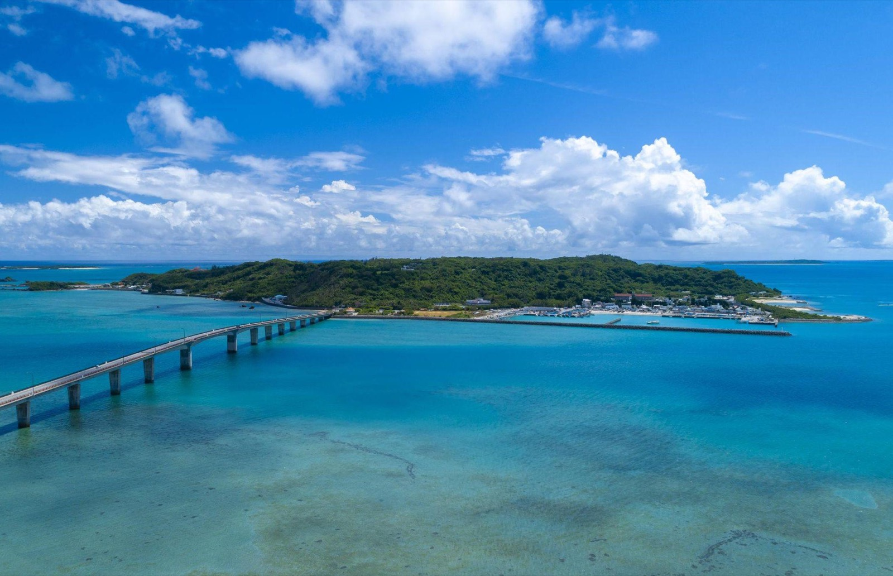
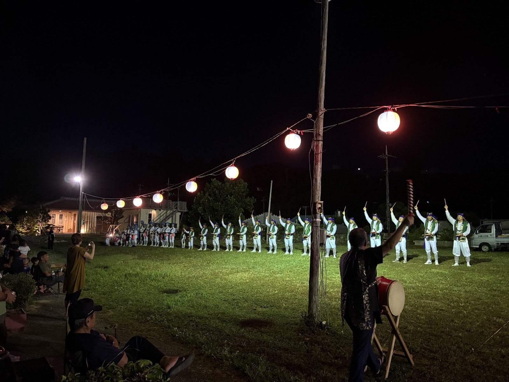
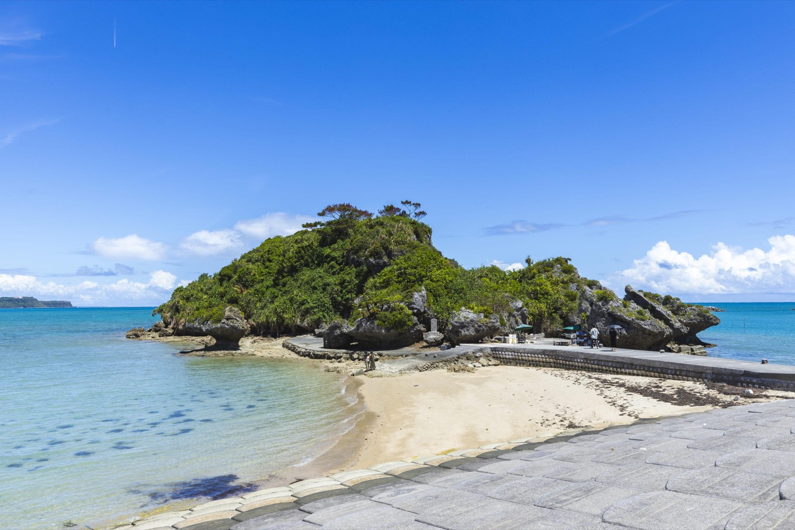
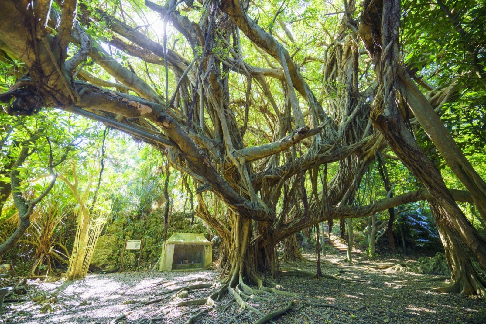

浜比嘉島について
沖縄県うるま市浜比嘉島。シルミキヨとアマミキヨという琉球開闢の祖神がこの島に住み着き、子を授かり繁栄していったという神話があり、島全体が聖地・パワースポットとなっています。
離島でありながら海中道路と浜比嘉大橋の2つの橋が本島へと繋がり、車での往来が可能となっております。東には朝日、西には夕日が見え、夜には満天の星空が広がります。今では少なくなった、昔ながらの古民家集落の風景もとてもお薦めです。
浜比嘉島とは
About the Island
神と伝統が息づく島
ー 島の中を巡ると出会う拝所 ー
赤瓦屋根の家並みや石垣残る、昔ながらの風景を感じられる島です。浜比嘉島は、浜集落、比嘉集落、そして兼久集落の三つに分かれています。
それぞれの集落には、拝所や御嶽が点在しています。地元民や、ノロ（御願をする方）によって守られている秘密の拝所もあり、とても神聖な島です。

受け継がれる伝統行事
ー 旧暦で執り行われる行事 ー
年間を通じて島では、旧暦に則って行事が執り行われています。旧正月に始まり、ハーリー、豊年祭、エイサーなどがあります。
浜比嘉島や島嶼地域で今も見られるこれらの行事は、代々受け継がれ、沖縄の真髄を表しています。集落によっては、過疎化により継承が難しくなってきている側面もあり、是非とも足を運んでみて頂きたい風景です。
島の旧暦年間行事
- 1月1日年頭拝み ― 新年の始まりを神々に報告し、島の平穏と繁栄を祈願。
- 1月3日ハチウクシー ― 漁師の豊漁と航海安全祈願。
- 3月3日浜下り（ハマウリ） ― 女性が海に下りて身を清め、健康と幸せを祈る。
- 5月4日ハーリー（海神祭） ― 航海安全と豊漁を願う船競漕。海の恵に感謝を捧ぐ。
- 6月24・25日豊年祭（ウスデーク） ― 五穀豊穣と子孫繁栄を祈る島最大の祭。歌や踊りで賑わう。
- 7月15日頃旧盆・エイサー ― 先祖の霊を迎え送り、感謝を込めて踊り奉納する。
＊新暦の日付は年ごとによって変動します。お調べの上、ご確認をお願いします。
浜比嘉島の名所
Spots
アマミチュー
ー 沖縄の創世神アマミキヨの眠る拝所 ー
海に浮かぶ小さな島「アマミチューの島」。ここは、琉球の人々の祖先とされる女神・アマミチュー（アマミキヨ）が祀られた神聖な場所です。
島の中心には静かに佇む御嶽があり、古より人々が祈りを捧げてきた場所です。

東（あがり）の御嶽
ー 浜集落の隠れた拝所 ー
樹齢600年のガジュマルが佇む拝所。東の御嶽は古くから村人たちが祈りを捧げてきた聖なる場所です。“あがり”とは太陽の昇る東を意味し、その名の通り、朝日を迎える方角に位置しています。
かつては豊穣や航海安全、そして家族の健康を願う祈りの場所として、今も地域の人々の心の拠り所です。静かな小道を進むと、柔らかな陽射しの中に、ガジュマルに包まれるように御嶽があります。
浜比嘉島へのアクセス
Access沖縄本島から海中道路を渡り、平安座島から浜比嘉大橋を渡ると浜比嘉島に到着します。那覇空港からは車で60〜90分です。
うるま市開催の地域の行事もとても興味深いので、うるま市観光物産協会のInstagram（@urumakankou）もあわせてご覧ください。
ご予約・お問い合わせ
ご予約・空き状況の確認はAirbnbにて承っております。ご不明な点は、メール（islandresort76@gmail.com）までお気軽にお問い合わせください。
宿の空き状況・ご予約（Airbnb）お問い合わせ：islandresort76@gmail.com